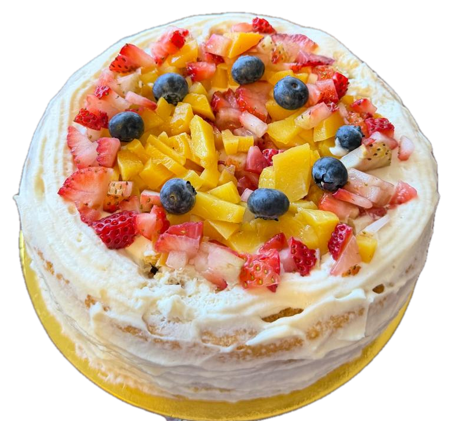
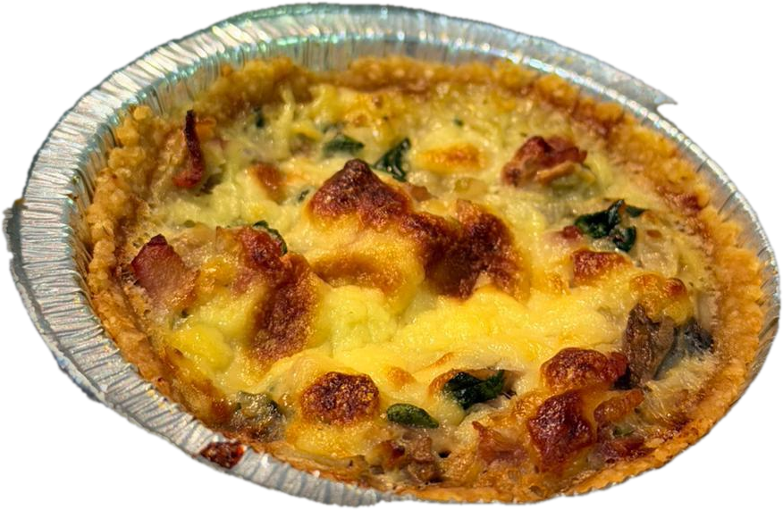
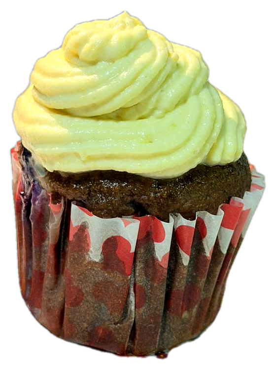

SAJUMA@SAJUMA_REPOSTERIA
LO QUE LLEVA TU POSTRE
Ingredientes que puedes
pronunciar

→
SAJUMA@SAJUMA_REPOSTERIA
FRUTA FRESCA
Fruta de verdad.
Picada esa misma mañana.
SAJUMA@SAJUMA_REPOSTERIA
INGREDIENTE 01
[ingrediente 1]
en lugar de [lo que reemplaza].
imagen del ingrediente · pendiente
SAJUMA@SAJUMA_REPOSTERIA
INGREDIENTE 02
[ingrediente 2]
[beneficio sencillo, sin promesas médicas].
imagen del ingrediente · pendiente
SAJUMA@SAJUMA_REPOSTERIA
TAMBIÉN HAY SALADO
Y sí:
también
hay salado

SAJUMA@SAJUMA_REPOSTERIA
LO QUE NO ENTRA EN MI COCINA
[colorantes artificiales]
[conservantes]
[lo que confirme la dueña]
SAJUMA@SAJUMA_REPOSTERIA
Postre rico.
Familia cuidada.
Ese es el trato.

PRÓXIMO CAPÍTULO →
PARA LOS MOMENTOS QUE IMPORTAN